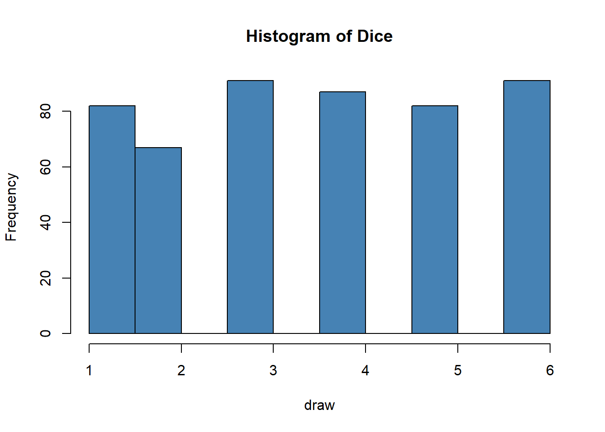

# 1.
dice <- c(1,2,3,4,5,6)10 Exam
10.1 Exercice 1 (5 points)
Create a 6-sided dice by creating a data frame containing the numbers 1 through 6.
Make 500 random draws of this dice and store the results in a dataframe called
df. Draw the results in an histogram. Hint: use sample instead of runif!Create a function that takes \(n\) as input and returns \(n\) random draws of the dice.
Create a function \(f(n)\) that takes \(n\) as input and returns the difference between your sample mean and your dice mean.
Compute \(f(100)\), \(f(1000)\) and \(f(100000)\). What can you conclude?
Solution Exercice 1
# 2.
draw <- sample(dice,500,replace=T)
df <- as.data.frame(dice)
hist(draw, col='steelblue', main='Histogram of Dice')
# 3.
Sample_dice <- function(n){
Out <- sample(dice,n,replace=T)
return(Out)
}# 4.
f <- function(n){
X <- 3.5 - mean(Sample_dice(n))
return(X)
}# 1.
f(100)[1] 0.15f(1000)[1] -0.011f(100000)[1] -0.00879# It converges to 0, due to the law of large number.10.2 Exercice 2 (10 points)
Download the file “data.csv”. You are a Data Scientist who wants to hire interns. In a test, you ask 12 candidates to do 6 tasks, each on R and Python and you will collect the time needed to do it.
The dataset is organized as following:
ID: The intern’s ID number.
Tool: The software used, either R or Python.
Events: the 6 different tasks to do on both tools.
Time: time needed to complete the task.
- Read the dataset into R, and assign the variables as following:
- ID is a factor
- Tool is a factor
- Time is numeric
- NAs are removed
Solution Question 1
df1 <- read.csv("data/df1.csv", sep=";")
df1$ID <- as.numeric(df1$ID)
df1$Tool <- as.factor(df1$Tool)
df1$Time <- as.numeric(df1$Time)
df1 <- filter(df1,!is.na(df1$Time))
head(df1) ID Tool Events Time
1 1 R 1 130
2 1 R 2 158
3 1 R 3 125
4 1 R 4 127
5 1 R 5 137
6 1 R 6 130- Create the factor Gender and add it to the dataset.
- ID 1-6 are males
- ID 7-12 are females
Solution Question 2
df1$Gender <- ifelse(df1$ID <7 ,"male","female")
head(df1) ID Tool Events Time Gender
1 1 R 1 130 male
2 1 R 2 158 male
3 1 R 3 125 male
4 1 R 4 127 male
5 1 R 5 137 male
6 1 R 6 130 male- Create the factor Age and add it to the dataset. This factor has three levels: young, mid, old.
- ID 1, 3, 4, 7 are young
- ID 2, 5, 6, 8 are mid
- ID 9 through 12 are old
Solution Question 3
df1$Age <- as.factor(df1$ID)
df1$Age <- gsub("1|3|4|7", "young", df1$Age)
df1$Age <- gsub("2|5|6|8", "mid", df1$Age)
df1$Age <- gsub("9|10|11|12", "old", df1$Age)
head(df1) ID Tool Events Time Gender Age
1 1 R 1 130 male young
2 1 R 2 158 male young
3 1 R 3 125 male young
4 1 R 4 127 male young
5 1 R 5 137 male young
6 1 R 6 130 male youngBefore the test, it was asked to the candidate to give their final Exam grades on R and Python, as well as the wage they want for one hour working. All this data is on the file “df2.csv”.
- Add the variable Wage to your first dataset. Carreful: the number of rows must not change!
Solution Question 4
library(tidyverse)
df2 <- read.csv("data/df2.csv", sep=";")
head(df2) ID Tool Exam Wage
1 1 R 19 10
2 1 Python 15 10
3 2 Python 14 9
4 2 R 15 9
5 3 Python 10 9
6 3 R 16 9df3 <- df2 %>% select(ID,Wage) %>% unique()
df1 <- left_join(df1,df3,by="ID")
head(df1) ID Tool Events Time Gender Age Wage
1 1 R 1 130 male young 10
2 1 R 2 158 male young 10
3 1 R 3 125 male young 10
4 1 R 4 127 male young 10
5 1 R 5 137 male young 10
6 1 R 6 130 male young 10- Create a table that summarize the results: display the mean of Time for each ID and Tool.
Solution Question 5
library(tidyverse)
Table1 <- df1 %>% group_by(ID,Tool) %>% summarise(mean = mean(Time))`summarise()` has grouped output by 'ID'. You can override using the `.groups`
argument.head(Table1)# A tibble: 6 × 3
# Groups: ID [3]
ID Tool mean
<dbl> <fct> <dbl>
1 1 Python 174.
2 1 R 134.
3 2 Python 124.
4 2 R 113
5 3 Python 196.
6 3 R 165.- Rank the table from the better candidate to the last one (i.e the shortest time) and keep only 3 candidates, whatever the tool used. Add a column that compute the total wage needed to realize the task for each candidate and select the cheapest! Who will be hired?
Solution Question 6
library(tidyverse)
Table2 <- Table1 %>% top_n(3, mean) %>% arrange(mean)
Table2 <- Table2[1:4,]
Table2 <- left_join(Table2,df3,by="ID")
Table2$Wage_needed <- Table2$mean * Table2$Wage
Table2 <- Table2 %>% arrange(Wage_needed)
head(Table2)# A tibble: 4 × 5
# Groups: ID [3]
ID Tool mean Wage Wage_needed
<dbl> <fct> <dbl> <int> <dbl>
1 10 Python 105 9 945
2 11 R 110. 10 1097.
3 7 R 101. 11 1109.
4 7 Python 102. 11 1126.# Candidate 10 is hired!- You will now only work on R (i.e forget Python). Create a new table with those variables: ID, Results (the mean of Time for the 6 tasks), Exam (R exam results), Gender, Age and Wage.
Solution Question 7
library(tidyverse)
Table3 <- Table1 %>% filter(Tool=="R")
Table4 <- df2 %>% filter(Tool=="R")
colnames(Table3)[3] <- "Results"
#Table4 <- df2 %>% filter(Tool=="R")
#Table4 <- Table4[,-c(2:2)]
#Table3 <- Table3 %>% group_by(ID) %>% summarise(mean = mean(Time))
head(Table3)# A tibble: 6 × 3
# Groups: ID [6]
ID Tool Results
<dbl> <fct> <dbl>
1 1 R 134.
2 2 R 113
3 3 R 165.
4 4 R 130.
5 5 R 130.
6 6 R 176.df1 <- left_join(df1,Table3,by="ID")
df1 <- left_join(df1,Table4,by="ID")
df1 <- df1 %>% select(ID,Results,Exam,Gender,Age,Wage.y)
colnames(df1)[6] <- "Wage"
df1 <- df1 %>% unique()
head(df1) ID Results Exam Gender Age Wage
1 1 134.5000 19 male young 10
13 2 113.0000 15 male mid 9
24 3 165.2500 16 male young 9
34 4 129.6667 18 male young 12
46 5 130.5000 15 male mid 10
55 6 175.6667 9 male mid 8head(Table4) ID Tool Exam Wage
1 1 R 19 10
2 2 R 15 9
3 3 R 16 9
4 4 R 18 12
5 5 R 15 10
6 6 R 9 8# Candidate 10 is hired!- Run the following linear regression: \(Wage = Results + Exam + Age + Gender+ \epsilon\). Interpret the results and export it in HTML, Text and Latex. Would you say that the candidates are quite honest in their salary expectations?
Solution Question 8
library(stargazer)
Please cite as: Hlavac, Marek (2022). stargazer: Well-Formatted Regression and Summary Statistics Tables. R package version 5.2.3. https://CRAN.R-project.org/package=stargazer Model <- lm(Wage ~ Results + Exam + Gender, data = df1)
stargazer(Model,type = "text")
===============================================
Dependent variable:
---------------------------
Wage
-----------------------------------------------
Results 0.006
(0.010)
Exam 0.333**
(0.117)
Gendermale -0.359
(0.708)
Constant 4.007
(2.729)
-----------------------------------------------
Observations 12
R2 0.522
Adjusted R2 0.343
Residual Std. Error 1.220 (df = 8)
F Statistic 2.910 (df = 3; 8)
===============================================
Note: *p<0.1; **p<0.05; ***p<0.0110.3 Exercice 3 (5 points)
For each of the 4 groups of lines of code below, explain in your own words the purpose of the code.
If you try to run the code an error will appear. Can you correct it, run the code and give the value of the fifth row?
# 1.
set.seed(123)
# 2.
ID <- c()
df1 <- c()
df2 <- c()
df3 <- c()
# 3.
ID <- seq(1:100)
ID <- as.data.frame(ID)
df1 <- runif(100,0,1)
df1 <- as.data.frame(df1)
df2 <- rnorm(n = 100, mean = 2, sd = 5)
df2 <- as.data.frame(df2)
df3 <- rpois(101,2)
df3 <- as.data.frame(df3)
df3[-101,]
df3 <- as.data.frame(df3)
# 4.
df <- cbind(ID,df1,df2,df3)
df <- gather(df,"DF","Score",2:4)
Solution Exercice 3
1.1 set.seed(123) generates a sequence of pseudo random numbers such that the outcomes is the same for every user.
1.2 We create 4 empty vectors.
1.3 We create 4 dataframes made of different laws of probabilities: a sequence from 1 to 100, a uniform law with runif, a normal law with rnorm and a Poisson law with rpois. df3 has 101 observations, so we try to erase the number 101 with df3[-101,]. But the object remains unchanged, so we miss df3 <- df3[-101,]. This is the error.
1.4 We bind the columns into a single dataframe df and we make the data tidy with df <- gather(df,"DF","Score",2:4)
# 1.
set.seed(123)
# 2.
ID <- c()
df1 <- c()
df2 <- c()
df3 <- c()
# 3.
ID <- seq(1:100)
ID <- as.data.frame(ID)
df1 <- runif(100,0,1)
df1 <- as.data.frame(df1)
df2 <- rnorm(n = 100, mean = 2, sd = 5)
df2 <- as.data.frame(df2)
df3 <- rpois(101,2)
df3 <- as.data.frame(df3)
df3 <- df3[-101,]
df3 <- as.data.frame(df3)
# 4.
df <- cbind(ID,df1,df2,df3)
df <- gather(df,"DF","Score",2:4)
head(df) ID DF Score
1 1 df1 0.2875775
2 2 df1 0.7883051
3 3 df1 0.4089769
4 4 df1 0.8830174
5 5 df1 0.9404673
6 6 df1 0.0455565- The value of the fifth row is 0.9404673